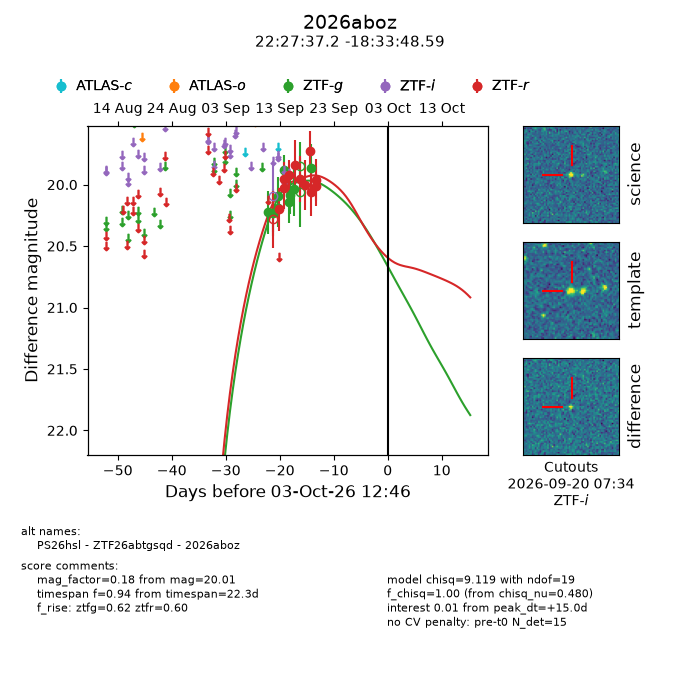
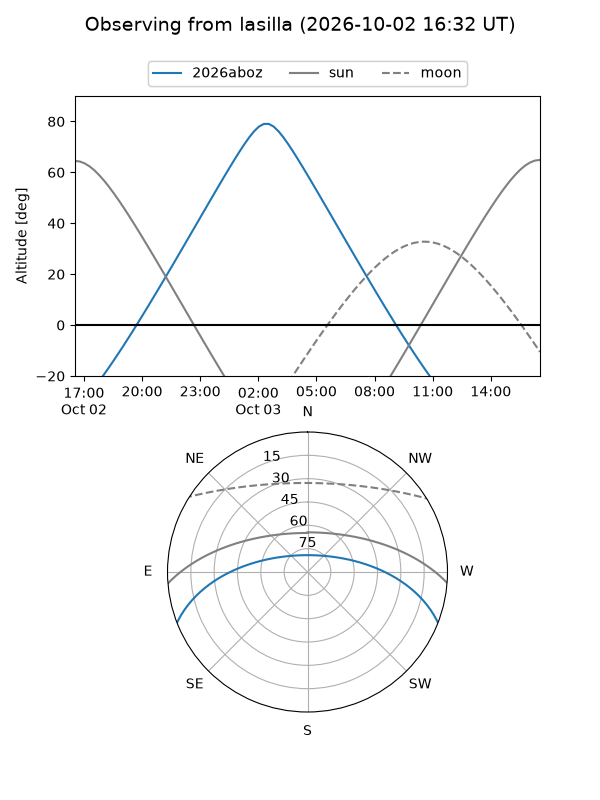
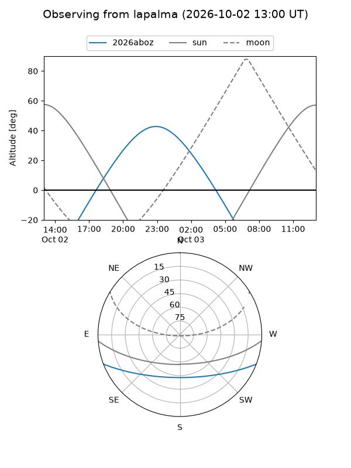
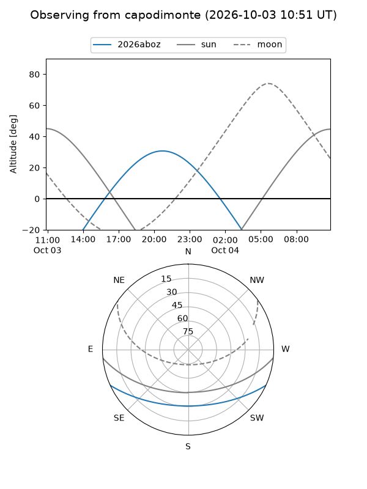
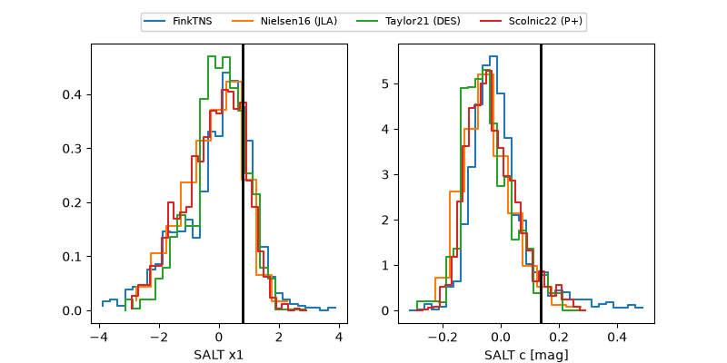

2026aboz
Target 2026aboz at 2026-10-03 12:48
Aliases and brokers:
FINK-ZTF: ztf.fink-portal.org/ZTF26abtgsqd
Lasair-ZTF: lasair-ztf.lsst.ac.uk/objects/ZTF26abtgsqd
ALeRCE-ZTF: alerce.online/object/ZTF26abtgsqd
YSE-PZ: ziggy.ucolick.org/yse/transient_detail/2026aboz
TNS name: wis-tns.org/object/2026aboz
Direct TNS query: direct search
alt names
ZTF26abtgsqd (ztf,fink_ztf)
2026aboz (tns,yse)
PS26hsl (panstarrs)
Coordinates:
equatorial (ra, dec) = 336.9049,-18.56350
equatorial (HMS+DMS) = 22:27:37.18,-18:33:48.59
galactic (l, b) = (39.7527,-55.90530)
Flags:
TNS type: nan
peak dt: +15.0
Photometry:
last ztfg=19.87, ztfr=20.01
9 ztfg, 11 ztfr detections
Lightcurve

Visibility



Additional plots
